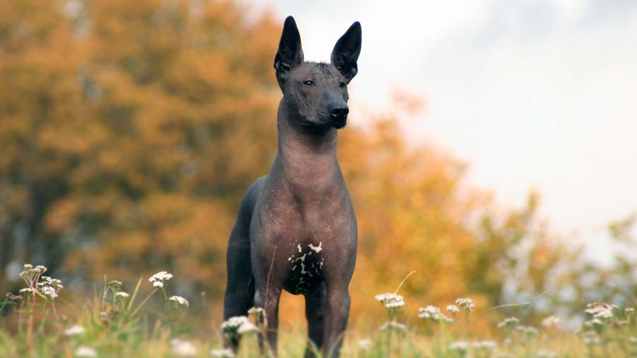
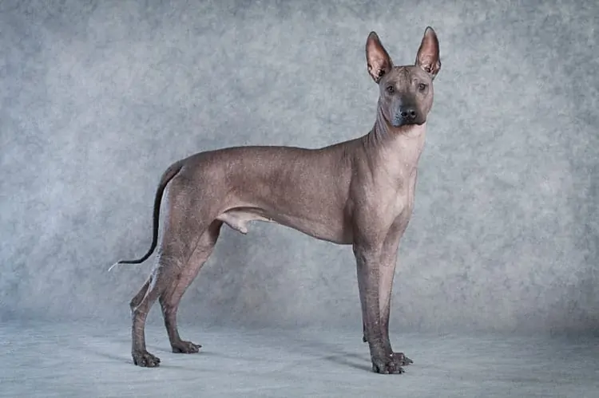
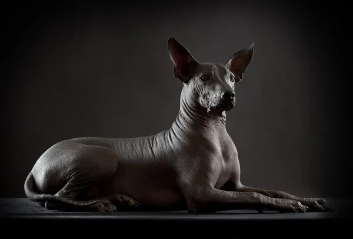
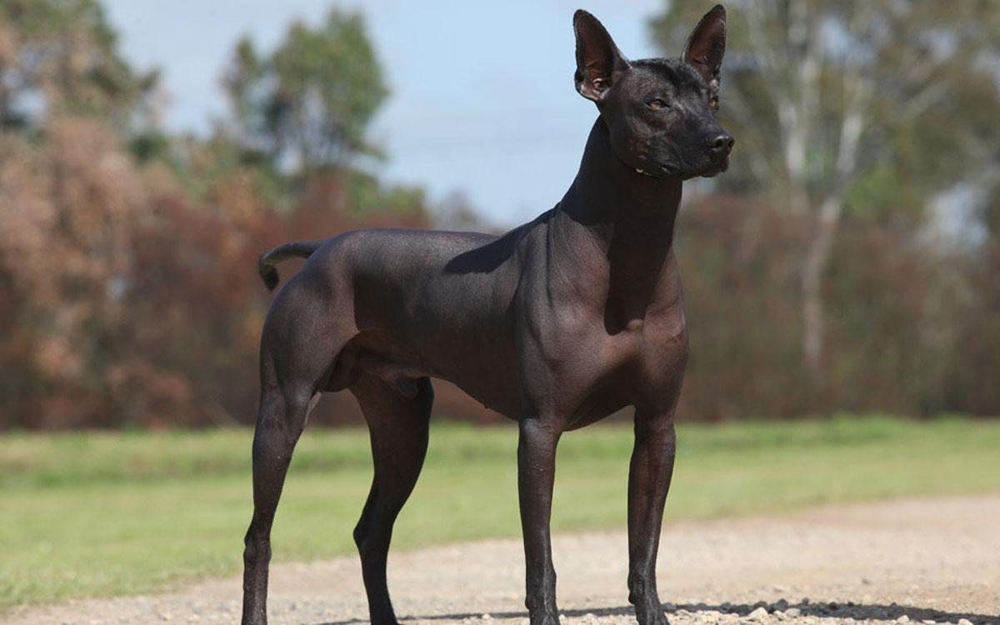

Xoloitzcuintli

origin
Mexico
size
Medium
color
Others
type
Purebred
breed group
Non Sporting (AKC:2010), Sighthounds and Pariah Dogs (UKC)
character
Fluffy
temperament
Sighthounds and Pariah Dogs (UKC)
Cheerful
Companionablel
height
15-20 inches (38-51 cm)
weight
15-30 pounds (6.8-14 kg)
geography
North America
overview
One of the world's oldest and rarest breeds, the Xoloitzcuintli can justly be called the first dog of the Americas. Archaeological evidence indicates that Xolos accompanied man on his first migrations across the Bering Straits. Their name is derived from the name of the Aztec Indian god Xolotl and Itzcuintli, the Aztec word for dog. With a reputation as a healer, the breed and its warm skin is often put to use in remote Mexican and Central American villages to ward off and cure ailments like rheumatism, asthma, toothache and insomnia. Xolos were also believed to safeguard the home from evil spirits and intruders.
history
The Xoloitzcuintli is a very ancient Latin American breed, dating back to before the time of the Aztec Empire and its existence can be substantiated for as far back as three thousand years. They were held in high esteem by the native Toltec and Mayan civilizations. The Aztecs, however, extended their appreciation of the breed to one of a culinary nature. With the defeat of the Aztecs and their culture by the Spanish, the breed diminished drastically, essentially becoming rare.
It is thought the breed was saved from extinction by its adoption by remote, mountain-dwelling Indians. Never entirely forgotten, interest in the breed was eventually revived and it was formally recognized by the FCM (Mexican Kennel Club) in 1956. The Xolo today is being acknowledged with increased interest for its companionship, loyalty, cleanliness and flexibility to do it all! They make great companions, show, agility, obedience, therapy and service dogs.
Photo Gallery


